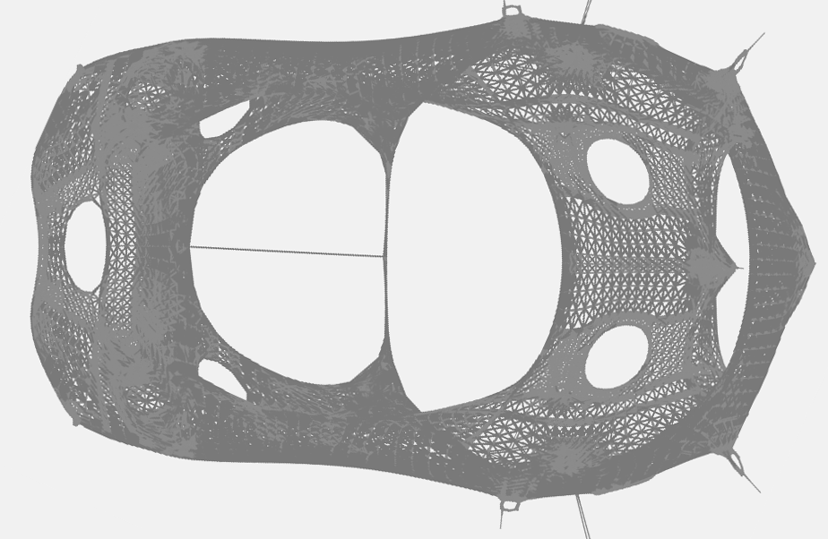

Overview
This is the open source project KaDraw - Karlsruhe Graph Drawing. So far, it contains the algorithm MulMent [1] which is alternative iterative local optimizer suggested by Gansner et. al usable and fast in practice.MulMent is a multilevel algorithm tailored to large networks. Its main drawing routine is a local optimizer suggested by Gansner et al. [2], which we have made fast in practice. Moreover, MulMent employs a coarsening algorithm for building the multilevel hierarchy that can control the trade-off between the number of hierarchy levels and convergence speed of the local optimizer. The speed of the local optimizer stems from (i) shared-memory parallelism and (ii) approximation of long-range forces by using coarser representatives stored in the multilevel hierarchy.
Example drawing of bcsstk31:

News:September 2015: Initial Release of MulMent codes within the framework.
Licence
The program is licenced under GPL 2.0. Please let us know if you need a commercial licence.If you publish results using our algorithms, please acknowledge our work by quoting the following paper:
@inproceedings{mulment2015,
AUTHOR = {Meyerhenke, Henning and Nöllenburg, Marting and Schulz, Christian},
TITLE = {{Drawing Large Graphs by Multilevel Maxent-Stress Optimization}},
BOOKTITLE = {Proceedings of the 23rd International Symposium on Graph Drawing & Network Visualization},
SERIES = {LNCS},
PUBLISHER = {Springer},
YEAR = {2015}
}
Download
- KaDraw_v1.01.tar.gz (or available on GitHub here)
- User Guide
Support
- Write us an email if you need support!
- We are glad for any comments and error reports (or even bug fixes or feature requests) that you send us.
- Graphs used in our papers will be provided to you on request!
References
- [1] Henning Meyerhenke, Martin Nöllenburg and Christian Schulz. Drawing Large Graphs by Multilevel Maxent-Stress Optimization. Proceedings of the 23rd International Symposium on Graph Drawing & Network Visualization. 2015.
PDF here. - [2] Emden R. Gansner, Yifan Hu and Stephen North. A Maxent-Stress Model for Graph Layout. IEEE Transactions on Visualization and Computer Graphfics, Vol. 19, No. 6, 2013.